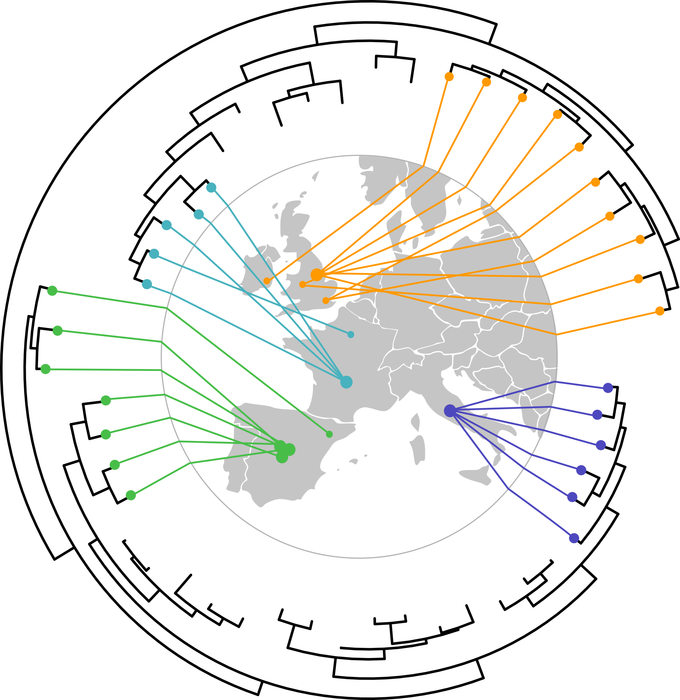
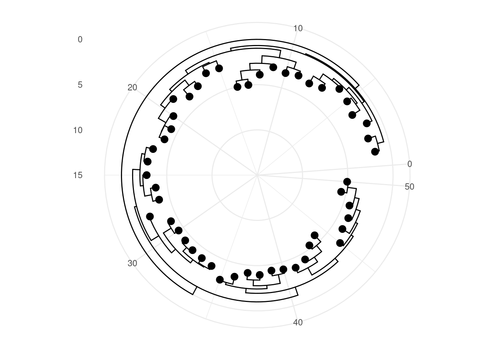
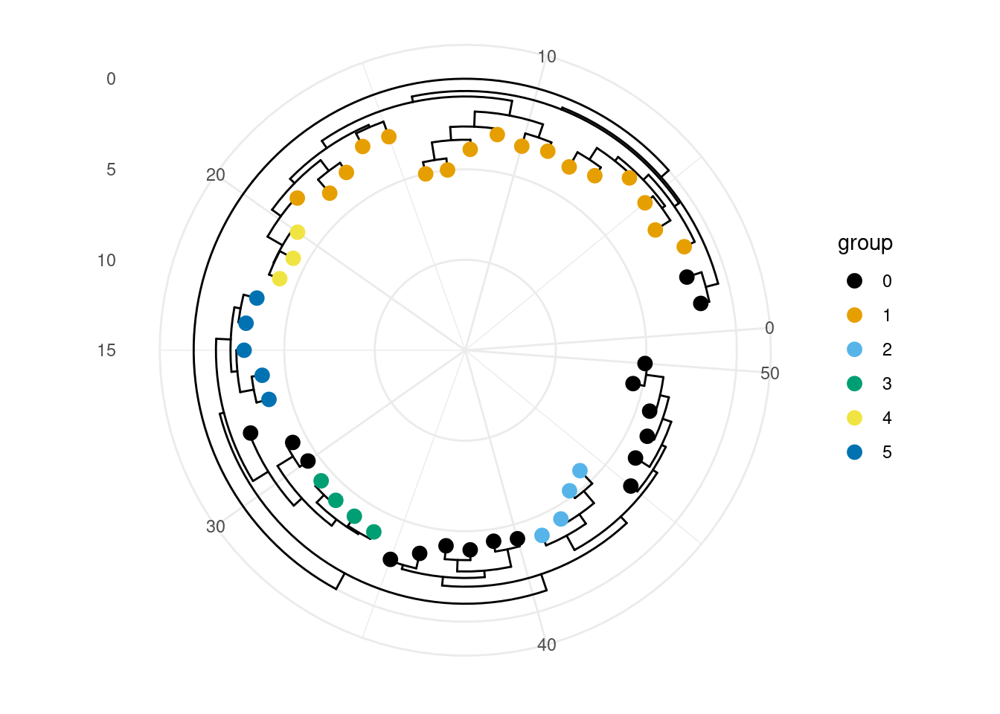
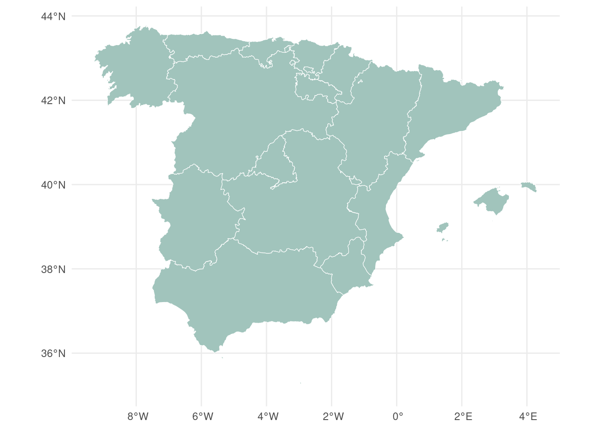
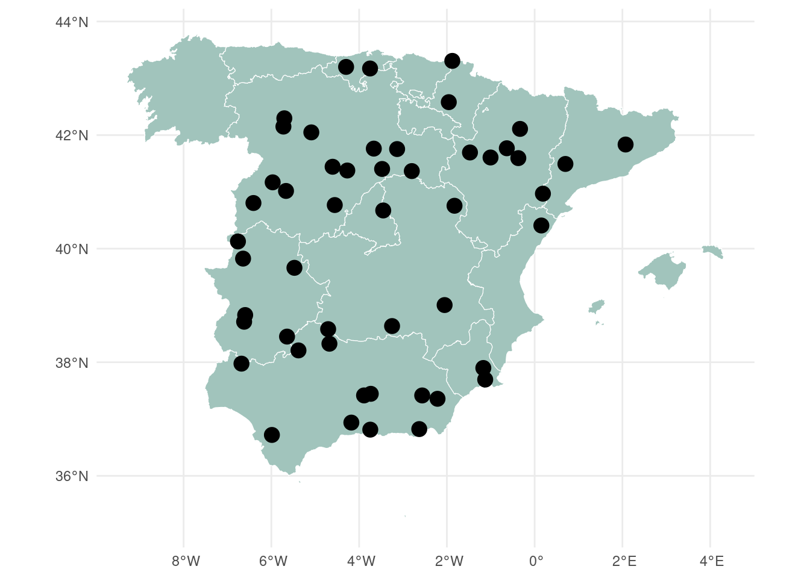
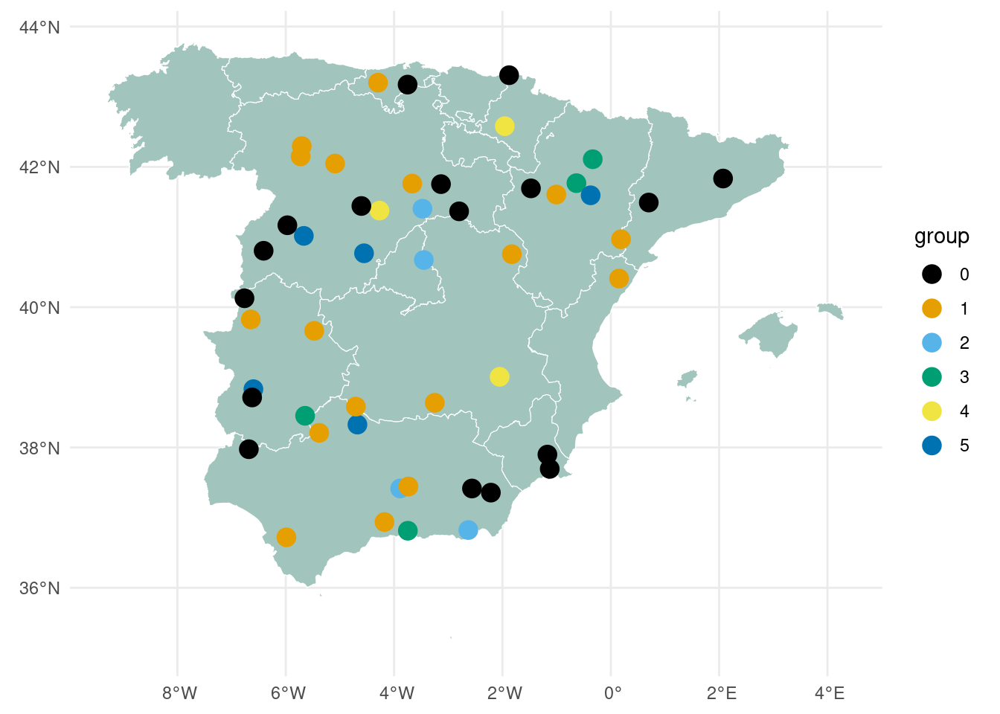
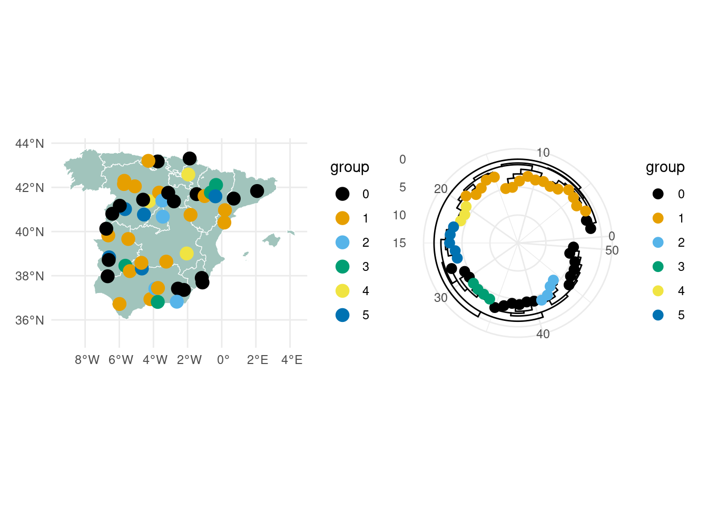

# load library
library(ggtree)
library(dplyr)
library(ggthemes)
library(sf)
library(ggplot2)
library(ape)
# set random seed
set.seed(1234)The situation
In a recent meeting, I was shown an impressive figure and asked if I could attempt to recreate it for a project. It was an amazing graphic, one that immediately struck me as having been created in Python. Unfortunately, I am far more proficient in R than in Python, especially when it comes to producing publication-quality figures. So I went about spending the next two weeks in seeing if it could be done in R.
Lets take a look at our opponent, Figure 2 from the publication: Dudas et al., 2021 - “Emergence and spread of SARS-CoV-2 lineage B.1.620 with variant of concern-like mutations and deletions”. Im not really sure how copyrights work,so I am not going to include the image here, but I made a mock-up of what I want to achieve.

We have a circular maximum likelihood tree with projections onto a map of Europe. The tree’s tip points are colored according to country, with lines extending from each tip to an “inner circle”, from which they continue outward to the corresponding geographic coordinates. I like the use of this inner circle, it prevent the connective lines from crossing directly across the tree, retaining the structure of the branches.
There are a few obvious problems that struck me as I set out on this endeavor, the first being that circular trees will have polar coordinates (originating from the tree root), and the map with have cartographic coordinates. While I have not really considered the two together before, it seems obvious that they would not mix well.
The first thing I did was check to see if this publication has any code available, and they did. The authors of this really neat paper detailed their analysis extremely well and can be found on their GitHub page.
It appears that following is going on in this code:
- Load SARS-CoV-2 tree and associated metadata, including sequence information, locations, travel data, and color schemes.
- Collapse trivial branches to simplify the tree and select a specific subtree of interest.
- Scale branch lengths by the genome alignment length.
- Sort branches geographically or by predefined country order to improve visualization.
- Deduplicate closely related tips from the same location to reduce tree complexity.
- Plot the phylogenetic tree in polar (circular) coordinates, including angle calculations, normalization of branch heights, scale bar with ticks and labels, computation of polar coordinates for nodes, curved internal branches, and tip plotting.
- Add branches to the plot using line collections to render the tree structure.
- Overlay the tree onto a geographic map using a
cartopyprojection. - Highlight tips representing travelers and geographically significant locations with larger markers, outer circles, and colors reflecting country or travel status.
- Add a legend for selected countries and finalize the plot by removing ticks, labels, and spines, ensuring proper aspect ratio and layout.
Im sure it’ll be ten nice and easy steps.
🤔 Why not use
phytools?? (which is accompanied by a very well maintained blog). This was a viable option, but I have two minor gripes, (i) the plots are not the most aesthetically pleasing ones (very shallow, I know), and (ii) I could not seem to achieve a circular tree with map projections.
The Trial
Preparing R environment
Preparing test data
Phylogenetic tree
Creating a test phylogenetic tree is easily achieved as such using ggtree, for which the resources are avaialble here.
# create a test tree and plot
tree <- rtree(50)
tree_p <- ggtree(tree) +
layout_inward_circular(xlim=15) +
geom_tippoint(color = "black", size = 3) +
theme_minimal()
tree_p
Finally, in a real phylogeny, I would have meaningful data (taxonomy, host, patient, ect), so for this I can going to create some clusters. This probably would not make biological sense, but this is just purely for demonstration.
# Pick some nodes to define clusters (here randomly picking nodes)
nodes_to_group <- sample((Ntip(tree)+1):(Ntip(tree)+Nnode(tree)), 5)
# Create ggtree plot
tree_p <- ggtree(tree) + layout_inward_circular(xlim = 15)
# Group clades
tree_p <- groupClade(tree_p, .node = nodes_to_group)
# Color tip points based on group
tree_p <- tree_p +
geom_tippoint(
aes(color = group),
size = 3) +
scale_color_colorblind() +
theme_minimal()
tree_p
Next lets get the tip identities from this test data, we will need this later to assign random locations (longetude, latitude coordinates) to these tips.
tree_data <- tree_p$data |>
dplyr::filter(isTip)
# collect the tips
tips <- tree_data$labelThe map
In this example I am just going to get a shape file from the Spanish governments website Centro de Descargas. You may have to dig through the internet to find the correct shape files, but I have found success in government websites. For instance, this URL will redirect you to a zipped shape file containing Europe boundaries. The type of file you are looking for is a .shp file, or a shape file. These can be used to plot maps with the package sf. Additionally, they can be converted easily into shaped for plotting natively with ggplot.
Thankfull, we can download and unzip the file with R:
# Download the shapefile. (note that I store it in a folder called 'data/'. You have to change that if needed.)
download.file("https://centrodedescargas.cnig.es/CentroDescargas/limites-municipales-provinciales-autonomicos#/lineas_limite.zip", destfile = "data/lineas_limite.zip")
# If the above doesnt work, go to this link and download the data manually: https://centrodedescargas.cnig.es/CentroDescargas/limites-municipales-provinciales-autonomicos#
## the code can be deposited in the working directory
# Unzip this file. You can do it with R (as below), or clicking on the object you downloaded.
unzip("data/lineas_limite.zip", exdir = "data", junkpaths = FALSE)I stole that little chunk of code from R Graph Gallery, with a minor modification.
With the shape files downloaded, we can now import and draw out first map.
# Import the shape file
map_sf <- st_read("data/SHP_ETRS89/recintos_autonomicas_inspire_peninbal_etrs89/recintos_autonomicas_inspire_peninbal_etrs89.shp")Reading layer `recintos_autonomicas_inspire_peninbal_etrs89' from data source
`/home/phesketh/Documents/GitHub/pjhesbest.github.io/blog/posts/2025-08-29_tree-with-map/data/SHP_ETRS89/recintos_autonomicas_inspire_peninbal_etrs89/recintos_autonomicas_inspire_peninbal_etrs89.shp'
using driver `ESRI Shapefile'
Simple feature collection with 19 features and 9 fields
Geometry type: MULTIPOLYGON
Dimension: XY
Bounding box: xmin: -9.301516 ymin: 35.17045 xmax: 4.327785 ymax: 43.79238
Geodetic CRS: ETRS89# Plot simple map
ggplot(map_sf) +
geom_sf(
fill = "#a1c4bc",
color = "white") +
theme_minimal()
Nice and easy so far. Next I create some test data for random locations.
# Generate ~95% random uniform points across the geometry
n_total <- 50
random_points <- st_sample(map_sf, size = n_total, type = "random")
# Plot the map with data points
ggplot(map_sf) +
geom_sf(fill = "#a1c4bc", color = "white") +
geom_sf(data = random_points, color = "black", size = 4) +
theme_minimal()
Finally, I need to asign these geographic data points to the tips names. Because these are randomly shuffled, this will not be a meaningful plot, but this is just a test. In the real world, I would be importing data (tree, map and associated metadata for each tip/sample).
# Suppose random_points is the sfc_POINT from st_sample()
random_points_sf <- st_sf(geometry = random_points) # now it's an sf object
# Add tip names
tip_names_shuffled <- sample(tree_data$label, size = length(random_points_sf$geometry))
random_points_sf$label <- tip_names_shuffled
# Sort both by label
random_points_sf <- random_points_sf %>%
arrange(label)
tree_data_sorted <- tree_data %>%
arrange(label)
# Add group column directly
random_points_sf$group <- tree_data_sorted$group
# Replot the map coloring the datapoints by group
map <- ggplot(map_sf) +
geom_sf(fill = "#a1c4bc", color = "white") +
geom_sf(data = random_points_sf,
aes(color = group), size = 4) +
theme_minimal() +
scale_color_colorblind() # nice colors
map
Bringing it all together (WIP)
map + tree_p
Test One
So here are the map and the tree together. In the original python code from the article, the authors actually deconstructed the phylogenetic tree and replotted it in catesian space, since as you can see the plot is currently has polar coordinates. So each branch, and each node and tip coodinate needs to be recalcualted, the line drawn between the data. This is complex to acheive, and I did have a go at it.
Final thoughts
So. I would not say that is is as elegant as the tree presented in the original publication, but I enjoyed to experience of recreating this graphic and hope that this is of some use to anyone.